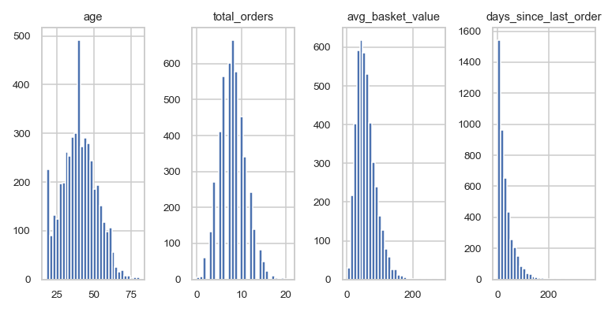
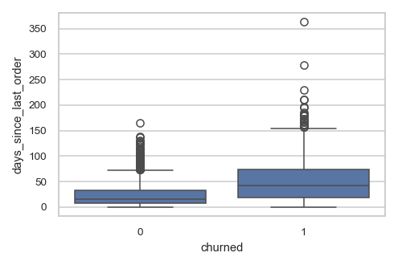
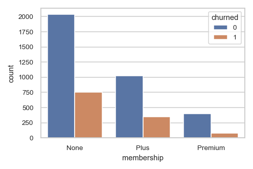
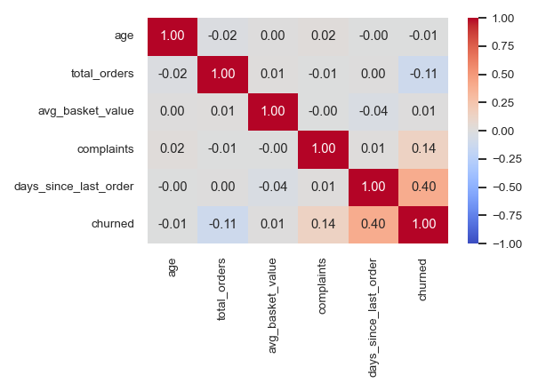
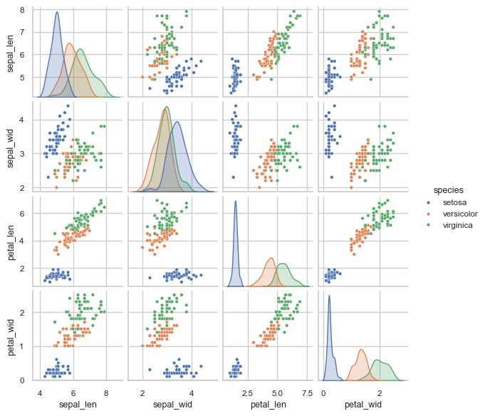

ML Pipeline Cheat Sheet
The idea: 4 steps
Load and split → preprocess (fit on train only) → compare a baseline and 2 models with CV → evaluate the winner on test. Everything else (EDA, features, tuning) is thinking or optional.
Load and split
import numpy as np, pandas as pd
from sklearn.model_selection import train_test_split, cross_val_score
df = pd.read_csv("data.csv") # path given in the prompt
target = "churned"
X = df.drop(columns=[target]); y = df[target]
X_train, X_test, y_train, y_test = train_test_split(
X, y, test_size=0.2, stratify=y, random_state=42)stratify=y keeps class proportions identical in train and test (for example, 25% churn in both).
Use it for classification. Drop it for regression, where it raises an error.
Quick EDA, with example output
Click any command to see example output (customer-churn data, shortened) and what to look for. Expand all
Structure
df.shape size
(5040, 11)Rows × columns. Tells you whether slow models or big grids are affordable.
df.head(3) first rows
customer_id age region channel membership total_orders churned
0 C00000 35.0 Midwest app Plus 3 1
1 C00001 35.0 Northeast app NaN 9 0
2 C00002 49.0 West app Plus 7 1Eyeball the values: IDs, text categories, the target. customer_id is an ID, so drop it.
df.info() dtypes + non-null
# Column Non-Null Count Dtype
0 customer_id 5040 non-null object
1 signup_date 5040 non-null object <- a date stored as text
2 age 4690 non-null float64
3 region 4843 non-null object
5 membership 2011 non-null object
6 total_orders 5040 non-null int64
...object means text, so it needs encoding or pd.to_datetime. Non-null < rows means missing values.
df.dtypes.value_counts() how many of each type
object 5
float64 3
int64 3A quick count of how many numeric vs categorical columns you'll preprocess.
df.nunique() distinct values per column
customer_id 5000 <- unique per row = ID
signup_date 893
region 4
channel 6 <- expected 3?
membership 2
complaints 5
churned 2Unique count ≈ row count means an ID column. Few unique values, even in a numeric column, means it's categorical-like.
Missing values & duplicates
df.isna().sum() missing count
age 350
region 197
membership 3029 <- suspicious!
avg_basket_value 237Trap: read_csv turns the text "None"/"NA" into NaN. Here "None" was a real membership level: df["membership"].fillna("None") or keep_default_na=False.
df.isna().mean().sort_values(ascending=False) missing %
membership 0.601
age 0.069
avg_basket_value 0.047
region 0.039Rule of thumb: under ~30%, impute (plus an optional _missing flag). Over ~60% that's genuinely missing: drop the column or turn it into a flag.
df.duplicated().sum() duplicate rows
40Drop with df = df.drop_duplicates() before splitting, otherwise copies can land in both train and test.
Numeric columns
df.describe().T summary stats
count mean std min 50% max
age 4690 49.5 94.2 18 40 999 <- impossible
total_orders 5040 8.0 2.9 0 8 21
avg_basket_value 4803 59.5 30.1 1.8 54.5 284.1
days_since_last 4865 30.1 30.7 0 20 363Check min/max for impossible values, and the mean vs the median (50%) for skew.
df.select_dtypes("number").skew() skewness
age 9.83 <- driven by the 999s
avg_basket_value 1.12
complaints 1.27
days_since_last_order 2.09|skew| > 1 means heavily skewed. Consider np.log1p(x) for linear models. Trees don't care.
outliers with IQR
q1, q3 = df["age"].quantile([0.25, 0.75])
iqr = q3 - q1
mask = (df["age"] < q1 - 1.5 * iqr) | (df["age"] > q3 + 1.5 * iqr)
mask.sum()57 (q1=32, q3=49 → bounds 6.5 to 74.5)Decide case by case: impossible values (age 999) become NaN; real but extreme values are kept, capped (clip), or log-transformed.
Categorical columns
unique values of every text column
for c in df.select_dtypes("object"):
print(c, df[c].nunique(), df[c].unique()[:6])region 4 ['Midwest' 'Northeast' 'West' 'South' nan]
channel 6 ['app' 'web' 'STORE' 'store' 'WEB' 'APP']
membership 2 ['Plus' nan 'Premium']Spots inconsistent text: fix with df["channel"].str.strip().str.lower().
df["channel"].value_counts() frequency of each category
app 2125
web 1677
store 966
APP 119
WEB 103
STORE 50Rare categories (< 1%) can be grouped into "Other". High-cardinality columns (hundreds of values) shouldn't be one-hot encoded naively.
Relationship with the target
df[target].value_counts(normalize=True) class balance
0 0.747
1 0.25325% positives means imbalanced classes: use ROC AUC/F1, not accuracy, and stratify=y.
df.select_dtypes("number").corr()[target].sort_values() correlation with target
total_orders -0.11
avg_basket_value 0.01
age 0.02
complaints 0.14
days_since_last_order 0.40 <- strongest signal
churned 1.00A quick ranking of numeric drivers. It only captures linear relationships, so near 0 doesn't mean useless for trees.
df.groupby(target)[["total_orders", "complaints", "days_since_last_order"]].mean() feature means per class
total_orders complaints days_since_last_order
churned
0 8.23 0.54 22.88
1 7.48 0.79 51.19Easy to explain in your write-up: churners hadn't ordered for 51 days vs 23.
pd.crosstab(df["membership"], df[target], normalize="index") category vs target rate
churned 0 1
membership
None 0.73 0.27
Plus 0.75 0.25
Premium 0.82 0.18Churn rate per category. normalize="index" makes each row sum to 1.
df.groupby("region", dropna=False)[target].agg(["mean", "count"]) target rate + group size
mean count
Midwest 0.262 1243
Northeast 0.256 1194
South 0.243 1172
West 0.257 1234
NaN 0.208 197Same idea with group sizes, so you don't over-read small groups. dropna=False shows whether being missing itself matters.
Dates
parse and check range
df["signup_date"] = pd.to_datetime(df["signup_date"])
df["signup_date"].min(), df["signup_date"].max()(Timestamp('2022-01-01'), Timestamp('2024-06-18'))Check the range makes sense, then derive features (.dt.year, .dt.month, tenure in days). Time-ordered data needs a date-based split.
Plots (one line each)
df.hist(figsize=(12, 4), bins=30) distributions

Shape at a glance: days_since_last_order is right-skewed (log candidate), total_orders is roughly normal.
sns.boxplot(data=df, x=target, y="days_since_last_order") numeric feature by class

Clear separation between the boxes means a strong predictor. The dots are outliers.
sns.countplot(data=df, x="membership", hue=target) category by class

Compare bar heights within each category. Premium has visibly less churn.
sns.heatmap(df.select_dtypes("number").corr(), annot=True, fmt=".2f", cmap="coolwarm") correlation heatmap

Read the target row for drivers, and look for feature pairs with |r| > 0.8 (multicollinearity: drop one for linear models).
sns.pairplot(df, hue=target) every pair of features, by class

Scatter plots for every feature pair, with each feature's distribution per class on the diagonal (example: iris data). Look for features whose colours form separate clusters: here petal length/width split the species cleanly, setosa is isolated, and versicolor/virginica overlap slightly. Best for small data with few columns (< ~6): it draws n² plots and is slow on large data. Limit it with sns.pairplot(df, vars=[...], hue=target).
Then write 3 bullet findings in markdown. Graders read them.
Preprocess and model (plain pandas)
Rule: learn medians, modes, categories and mean/std from train only, then apply them to test.
from sklearn.linear_model import LogisticRegression
from sklearn.ensemble import RandomForestClassifier
from sklearn.dummy import DummyClassifier
from sklearn.metrics import classification_report, roc_auc_score
num_cols = X_train.select_dtypes("number").columns
cat_cols = X_train.select_dtypes(exclude="number").columns
# 1. impute: learn from TRAIN, apply to both
medians = X_train[num_cols].median()
modes = X_train[cat_cols].mode().iloc[0]
X_train = X_train.fillna(medians).fillna(modes)
X_test = X_test.fillna(medians).fillna(modes)
# 2. one-hot, then align test columns to train
X_train = pd.get_dummies(X_train, columns=cat_cols)
X_test = pd.get_dummies(X_test, columns=cat_cols).reindex(
columns=X_train.columns, fill_value=0)
# 3. scale (needed for linear models; trees don't care)
mu, sd = X_train[num_cols].mean(), X_train[num_cols].std()
X_train[num_cols] = (X_train[num_cols] - mu) / sd
X_test[num_cols] = (X_test[num_cols] - mu) / sd
for name, m in {"dummy": DummyClassifier(),
"lr": LogisticRegression(max_iter=1000),
"rf": RandomForestClassifier(random_state=42)}.items():
print(name, cross_val_score(m, X_train, y_train, cv=5,
scoring="roc_auc").mean().round(3))
best = RandomForestClassifier(random_state=42).fit(X_train, y_train) # or the CV winner
print(classification_report(y_test, best.predict(X_test)))
print("AUC", roc_auc_score(y_test, best.predict_proba(X_test)[:, 1])).reindex(...)is essential. Without it, unseen or missing categories give train and test different columns, andpredictcrashes.- Small CV leak: the medians are computed on the full training set, so the CV folds have seen them. Say so in one line (sklearn's
Pipelinewould avoid it). - A separate
test.csvmust go through the samemedians,modes,reindexandmu/sd.
Regression swap
from sklearn.linear_model import LinearRegression, Ridge
from sklearn.ensemble import RandomForestRegressor
from sklearn.dummy import DummyRegressor
from sklearn.metrics import mean_absolute_error, mean_squared_error, r2_score
# no stratify; scoring="neg_root_mean_squared_error" or "r2"
pred = best.predict(X_test)
print(mean_absolute_error(y_test, pred),
np.sqrt(mean_squared_error(y_test, pred)),
r2_score(y_test, pred))Time-ordered data: split by date (df[df.date < cutoff]), not randomly.
Feature importance (if time is left)
pd.Series(best.feature_importances_, index=X_train.columns).nlargest(10)Which metric?
| Situation | Metric |
|---|---|
| Balanced classes | accuracy, F1 |
| Imbalanced classes | ROC AUC, PR AUC, minority-class F1 or recall (not accuracy) |
| Regression, interpretable error | MAE |
| Regression, penalise big misses | RMSE |
~40-minute plan (75 min shared with SQL)
| Min | Do |
|---|---|
| 0–3 | Read the prompt: target, metric, deliverable |
| 3–11 | EDA plus 3 written findings |
| 11–19 | Cleaning, 2–3 features, split, preprocessing |
| 19–29 | Baseline, linear model and RF with CV |
| 29–35 | Test metrics, feature importance |
| 35–40 | 5-bullet summary; restart and run all |
Cut first: GridSearch, extra plots, the third model. Never cut: the baseline, leak-free preprocessing, the right metric, the summary.
Common errors
could not convert string to float: a categorical column wasn't encoded.Input contains NaN: a column was missed by imputation.ConvergenceWarning: usemax_iter=1000and scale the features.- Feature-count mismatch at predict time: you forgot to
reindextest to the train columns. - Forgot an argument?
help(train_test_split)anddir(sklearn.preprocessing)work offline.